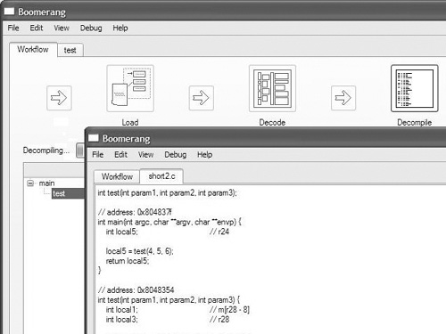
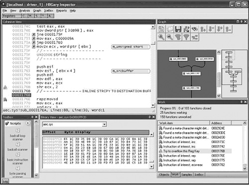
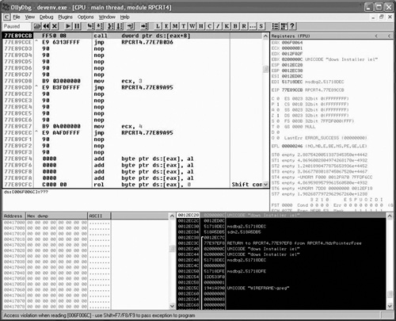
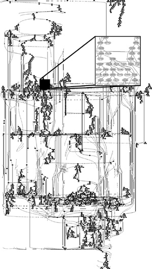
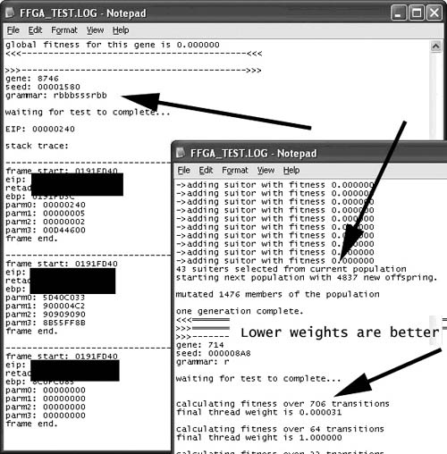

{% include JB/setup %}
{% raw %}
<div>
<a name="toppage" class="pcalibre calibre1"></a><table width="100%" border="0" cellspacing="0" cellpadding="0" class="sfbody"><tr valign="top" class="calibre2"><td class="calibre3"><a name="MainContent" class="pcalibre calibre1"></a><table width="95%" class="sfbody"><tr class="calibre2"><td class="pcalibre1 v"><!--Copyright (c) 2002 Safari Tech Books Online--><table width="100%" border="0" cellspacing="0" cellpadding="2" class="calibre4"><tr class="calibre2"><td valign="middle" class="v1 pcalibre1" height="5"></td></tr><tr class="calibre2"><td valign="middle" class="v1 pcalibre1"><table cellpadding="0" cellspacing="0" border="0" width="100%" class="calibre4"><tr class="calibre2"><td class="calibre6"><span class="calibre7"> </span>
                   
                  <span class="calibre7">   </span>
             <span class="calibre7"> </span></td></tr></table></td><td class="calibre8"/><td valign="middle" class="v2 pcalibre1"> 
           
          <span class="calibre7"><a target="_self" href="ch06.html" title="Previous section" class="pcalibre calibre1"></a></span>
				
				 
				
				<span class="calibre7"><a target="_self" href="ch06lev1sec2.html" title="Next section" class="pcalibre calibre1"></a></span></td></tr></table><div id="section" class="calibre15"><table width="100%" border="0" cellspacing="0" cellpadding="0" class="calibre4"><tr class="calibre2"><td valign="top" class="calibre8"><a href="10061538.html" class="pcalibre calibre1"></a>Security Game Programming Networking Programming Greg Hoglund Gary McGraw Addison Wesley Professional Exploiting Online Games: Cheating Massively Distributed Systems<a name="ch06lev1sec1" class="pcalibre calibre1"></a>
<h3 id="title-IDALZJYF" class="docSection1Title">Malicious Software Testing (Enter the Attacker)</h3>
<p class="docText">Is software testing malicious? Not always. But often the best testers push the limits of the software they are testing, trying out corner cases and edge conditions. Many times, the best tester in a QA group is not the most well-liked individual among the developers (and sometimes even among management). This is the tester who always finds horrible bugs (leading to headaches for developers); the tester who tells other people that they have made mistakes and has demonstrations to prove it; the tester who naturally thinks about software failure.</p>
<p class="docText">The interesting thing is that those software testers who try the hardest to break the code come the closest to probing the edges of security risk. The <a name="iddle1045" class="pcalibre calibre1"></a><a name="iddle1047" class="pcalibre calibre1"></a><a name="iddle1112" class="pcalibre calibre1"></a><a name="iddle1115" class="pcalibre calibre1"></a><a name="iddle1224" class="pcalibre calibre1"></a><a name="iddle1389" class="pcalibre calibre1"></a><a name="iddle1690" class="pcalibre calibre1"></a><a name="iddle2075" class="pcalibre calibre1"></a><a name="iddle2081" class="pcalibre calibre1"></a>kind of risk-driven, attack scenario testing described in <a class="pcalibre6 pcalibre5 calibre1" href="ch07.html#ch07">Chapter 7</a> of McGraw's <span class="docEmphasis">Software Security</span> (Addison-Wesley, 2006) is driven by the very idea of ferreting out security problems using classic testing techniques.</p>
<p class="docText">Though many software developers do not typically think of software QA as a malicious activity, it can be. On one hand, functional testing is designed to make sure that software is reliable and engenders an excellent user experience. But security testing is not just about testing security functionality by asking whether the crypto works. Security testing must probe software like a bad guy, black hat firmly in place. Risk-based security testing, powered by architectural risk analysis and attack patterns, is meant to be malicious. As it turns out, many software bugs bring with them huge amounts of security risk. In this sense, software testing can indeed be malicious.</p>
<p class="docText">And it gets worse. Bugs found by the bad guys are only rarely reported to the good guys. That means that testers turned bad are in the game to discover—and then exploit—software problems.</p>
<a name="ch06lev2sec1" class="pcalibre calibre1"></a>
<h4 id="title-IDAM2JYF" class="docSection2Title">QA Tools and Techniques</h4>
<p class="docText">Software testers have an impressive arsenal of tools they have developed over the years to help understand and correct software. These include debuggers, coverage tools, fault injection engines, virtual machine simulators, decompilers, and disassemblers—an impressive list. Fledgling bad guys don't need to look far to find effective hacking tools. It turns out that game hackers can use the same kinds of off-the-shelf software testing tools as everyone else. These tools (both open source and commercial) are in common use in QA departments worldwide to find bugs . . . every day.</p>
<p class="docText">Software attackers bent on finding and exploiting bugs in online game software make great use of these workaday testing tools. We provide only a basic introduction to the attacker's toolkit in this section. For more, see our previous book <span class="docEmphasis">Exploiting Software</span>.</p>
<a name="ch06lev3sec1" class="pcalibre calibre1"></a>
<h5 id="title-IDA52JYF" class="docSection3Title">Decompilers</h5>
<p class="docText">A decompiler does exactly what a compiler does, only in reverse. The idea with a compiler is to start with source code in a language like C++ and compile it into native executable code for a target platform like Win32. The idea with a decompiler is to start with binary code from some platform and decompile it back into human-readable source code.</p>
<p class="docText">The problem with this idea is that it's easier said than done. That is, often it's easier to start with source and render binary than to go back to source from binary. There are many reasons for this that have to do with the arcane inner workings of compilers. As a result, decompilers tend to "shoot from the hip" and don't often yield exact source code. A decompiler is almost guaranteed to mangle comments, variable names, and sometimes even control flow constructs. In the end, decompilers yield an approximate value of what the source code might have looked like.</p>
<p class="docText">Decompilers are useful because it is much easier to read and understand source code than it is to read and understand binary code. Some people can read binary directly, but they're in a distinct minority. If you're trying to understand how a piece of code works, it's often easier to do this with source code around.</p>
<p class="docText">Game hackers can use a decompiler to help understand what the binary code that makes up a game client is actually doing. <a class="pcalibre6 pcalibre5 calibre1" href="#ch06fig01">Figure 6-1</a> shows an open source decompiler called Boomerang &lt;<a class="pcalibre6 pcalibre5 calibre1" target="_blank" href="http://sourceforge.net/projects/boomerang/">http://sourceforge.net/projects/boomerang/</a>&gt;.</p>
<a name="ch06fig01" class="pcalibre calibre1"></a><p class="calibre28"><center class="calibre29">
<h5 class="docFigureTitle">Figure 6-1. A full-featured decompiler called Boomerang.</h5>
</center></p><p class="docText"><div class="v8 pcalibre3 pcalibre2"><a target="_blank" href="fig06-01_alt.jpg" class="pcalibre calibre20">[View full size image]</a></div></p>
<br class="calibre15"/>
<a name="ch06lev3sec2" class="pcalibre calibre1"></a>
<h5 id="title-IDAY4JYF" class="docSection3Title">Disassemblers</h5>
<p class="docText"><a name="iddle1048" class="pcalibre calibre1"></a><a name="iddle1404" class="pcalibre calibre1"></a><a name="iddle1605" class="pcalibre calibre1"></a><a name="iddle1625" class="pcalibre calibre1"></a><a name="iddle2082" class="pcalibre calibre1"></a>Disassemblers are very similar to decompilers. In this case, instead of transforming binary code into source, they tackle the much easier task of converting binary into assembly language (a very low level language, but certainly not as low as a bunch of 1s and 0s). This is a straightforward process as long as you can determine the difference between code and data. Remember, what we're talking about here is a huge set of binary digits. Figuring out whether a given pile of binary is code or not is sometimes a challenge.</p>
<p class="docText">Modern disassemblers do a decent job of rendering assembly code. Code analysts interested in figuring out what a piece of executable binary does may start with a decompiler, and if that doesn't work, move on to using a disassembler.</p>
<p class="docText"><a class="pcalibre6 pcalibre5 calibre1" href="#ch06fig02">Figure 6-2</a> illustrates a standard commercial disassembler typically used for reverse engineering. The program is called Inspector by HBGary &lt;<a class="pcalibre6 pcalibre5 calibre1" target="_blank" href="http://www.hbgary.com">http://www.hbgary.com</a>&gt;. Though Inspector has many advanced features, it is in many cases too costly for game hackers. Free disassemblers with <a name="iddle1046" class="pcalibre calibre1"></a><a name="iddle1360" class="pcalibre calibre1"></a><a name="iddle1387" class="pcalibre calibre1"></a><a name="iddle1792" class="pcalibre calibre1"></a><a name="iddle1916" class="pcalibre calibre1"></a><a name="iddle2078" class="pcalibre calibre1"></a><a name="iddle2079" class="pcalibre calibre1"></a><a name="iddle2080" class="pcalibre calibre1"></a><a name="iddle2086" class="pcalibre calibre1"></a><a name="iddle2137" class="pcalibre calibre1"></a>fewer features are available for many platforms and can be easily found by searching the Net.</p>
<a name="ch06fig02" class="pcalibre calibre1"></a><p class="calibre28"><center class="calibre29">
<h5 class="docFigureTitle">Figure 6-2. A full-featured disassembler of the type typically used for reverse engineering.</h5>
</center></p><p class="docText"><div class="v8 pcalibre3 pcalibre2"><a target="_blank" href="fig06-02_alt.jpg" class="pcalibre calibre20">[View full size image]</a></div></p>
<br class="calibre15"/>
<a name="ch06lev3sec3" class="pcalibre calibre1"></a>
<h5 id="title-IDAHUO1F" class="docSection3Title">Debuggers</h5>
<p class="docText">Debuggers are multipurpose tools that allow direct interaction with a program as it runs. Debuggers are considered very low-level tools. They allow a tester to single-step through program instructions, determine program and variable state, insert breakpoints—in general watching very carefully what happens as a program runs.</p>
<p class="docText">Debuggers are an essential part of building software. Many debuggers are sophisticated tools—preserving state, displaying stack frames, showing variable bindings, and for the most part allowing huge insight into the code under analysis. A good debugger is thus an essential tool in finding and analyzing bugs in software.</p>
<p class="docText">Under the hood, software is a highly choreographed, complex dance of threads, stacks, registers, and memory locations. All of this complexity evolves from the interplay of two things—the program code and the machine it runs on. The machine was designed and manufactured by a hardware designer (think Intel), and the code/program that runs on the machine was created by a compiler (think gcc). To be sure, many rules and regulations are set forth by the operating system (think Microsoft Windows), but overall, software boils down at its core into interactions between specific commands for a given machine and stored data.</p>
<p class="docText">A decent debugger allows a person to interact with all of these complex data. Properly driven, a debugger can force a program to do almost anything it is inherently capable of doing, even if the activity was not an <span class="docEmphasis">intended</span> part of the design. This means that although debuggers were originally created to find bugs, people interested in exploiting games can use a debugger as the core component of a bot. In fact, we show you how to write your own basic debugger later for just these reasons.</p>
<p class="docText"><a class="pcalibre6 pcalibre5 calibre1" href="#ch06fig03">Figure 6-3</a> illustrates the very popular (and free) debugger known as OllyDbg &lt;<a class="pcalibre6 pcalibre5 calibre1" target="_blank" href="http://www.ollydbg.de/">http://www.ollydbg.de/</a>&gt;. This tool is commonly used for reverse engineering and hacking games designed for the Microsoft Windows platform.</p>
<a name="ch06fig03" class="pcalibre calibre1"></a><p class="calibre28"><center class="calibre29">
<h5 class="docFigureTitle">Figure 6-3. OllyDbg is a very popular and free debugger for Microsoft Windows programs (including games, of course).</h5>
</center></p><p class="docText"><div class="v8 pcalibre3 pcalibre2"><a target="_blank" href="fig06-03_alt.jpg" class="pcalibre calibre20">[View full size image]</a></div></p>
<br class="calibre15"/>
<a name="ch06lev3sec4" class="pcalibre calibre1"></a>
<h5 id="title-IDABWO1F" class="docSection3Title">Coverage Tools</h5>
<p class="docText">Coverage tools were created to help testers determine a rough measure of test completeness. Coverage tools do this by keeping close track of which possible paths through a program execute as a program runs. This allows testers to estimate test effectiveness by determining precisely which parts of a program a test is testing (and which parts it is not). A given test suite may exercise 90% of a program, whereas a different, less effective, suite may exercise only 40% of the code. There are many levels of coverage analysis, ranging from function coverage through multiple condition decision coverage.</p>
<p class="docText">Coverage tools work by instrumenting the program under test so that the tool can determine when a given part of the program is exercised (or run). (Note that coverage tools can instrument either program source or binary. Both kinds of tools are common.) Then a set of tests are run dynamically, and as the program runs, coverage data are tracked. For example, a coverage tool might instrument an <tt class="calibre38">if then else</tt> expression in such a way that the tester can determine whether both the <tt class="calibre38">then</tt> condition and the <tt class="calibre38">else</tt> condition are exercised by a given test suite.</p>
<p class="docText">Coverage tools are very useful for those interested in exploiting software because in software exploit, getting to the problem is half the battle. An <a name="iddle1041" class="pcalibre calibre1"></a><a name="iddle1049" class="pcalibre calibre1"></a><a name="iddle1108" class="pcalibre calibre1"></a><a name="iddle1505" class="pcalibre calibre1"></a><a name="iddle1585" class="pcalibre calibre1"></a><a name="iddle1691" class="pcalibre calibre1"></a><a name="iddle2069" class="pcalibre calibre1"></a><a name="iddle2083" class="pcalibre calibre1"></a>attacker might have discovered an exploitable defect deep inside a program (say, using a code-scanning tool), but somehow the attacker needs to cause the program to arrive at the vulnerable location with just the right state data. Coverage tools are very helpful in getting this done.</p>
<p class="docText">Too often, coverage tools are misused to estimate the "goodness" of a program. That is, some misguided testers believe that a 90% coverage result may say something about the program under test. But as we have described, code coverage results are really about test effectiveness. They are not about the program under test itself. Don't be confused by this issue.</p>
<p class="docText"><a class="pcalibre6 pcalibre5 calibre1" href="#ch06fig04">Figure 6-4</a> shows an example coverage graph of a fairly small program. The figure shows which code blocks in the control flow graph have been covered during testing with a given test set (the shaded nodes) and which ones were not exercised during testing (the white nodes). This is only part of a control flow graph; the actual graph is so large that we zoomed in on a subsection of the program and then highlighted a subsubsection of that. We generated this graph by using the open source Graphviz tool from AT&amp;T &lt;<a class="pcalibre6 pcalibre5 calibre1" target="_blank" href="http://www.graphviz.org/">http://www.graphviz.org/</a>&gt; combined with a custom debugger that we wrote.</p>
<a name="ch06fig04" class="pcalibre calibre1"></a><p class="calibre28"><center class="calibre29">
<h5 class="docFigureTitle">Figure 6-4. This is a large control flow graph of a software program. The shaded nodes were covered during dynamic testing, while the white nodes were not. Coverage analysis is a very useful way to determine testing effectiveness.</h5>
</center></p><p class="docText">
</p>
<br class="calibre15"/>
<a name="ch06lev3sec5" class="pcalibre calibre1"></a>
<h5 id="title-IDAB0O1F" class="docSection3Title">Fault Injection Engines</h5>
<p class="docText">Fault injection is fairly straightforward conceptually. The idea is to trip up a program as it runs by changing data state, messages, and other basic conditions. In principle, you can do everything that a fault injection engine does with a debugger. But often, having a special-purpose engine for running very large numbers of injections in an automated fashion is extremely useful. The basic idea behind fault injection is to perturb program or data state and then keep an eye out for what happens.</p>
<p class="docText">The three basic parts of a fault injection engine are (1) an injection engine (the part that perturbs program or data state), (2) a monitoring system (the part that keeps an eye on things), and (3) a way to run the program. Performing fault injection is a dynamic activity, just like using a debugger or running a coverage tool.</p>
<p class="docText">Using a fault injection tool, a tester can supply malformed data to critical parts of a program (including program input) in an attempt to get it to crash or otherwise do something interesting. Variations of fault injection also include forcing error conditions in code (by doing things like returning NULL from a memory allocation) in order to see how the program handles errors. For more on fault injection, see <span class="docEmphasis">Software Fault Injection</span> by Jeffrey Voas and Gary McGraw (Wiley, 1998).</p>
<p class="docText"><a class="pcalibre6 pcalibre5 calibre1" href="#ch06fig05">Figure 6-5</a> shows a fault injection engine being used to crash a server program. The engine is using a genetic algorithm to evolve grammars that <a name="iddle1097" class="pcalibre calibre1"></a><a name="iddle1630" class="pcalibre calibre1"></a><a name="iddle1705" class="pcalibre calibre1"></a>are then used to generate input strings to the program. The engine is attached to the target program as a debugger and is measuring code coverage as it runs. Individual genomes that produce better code coverage are allowed to "reproduce" to create the next generation. The inner workings of genetic algorithms are beyond the scope of this book, but interested readers can find a good primer in Melanie Mitchell's book <span class="docEmphasis">An Introduction to Genetic Algorithms (Complex Adaptive Systems)</span> from MIT Press (1998).</p>
<a name="ch06fig05" class="pcalibre calibre1"></a><p class="calibre28"><center class="calibre29">
<h5 class="docFigureTitle">Figure 6-5. A genetic-algorithm–based fuzzer at work attempting to crash a server. This fuzzer evolves tests that are more fit by applying the principles of genetic engineering.</h5>
</center></p><p class="docText"><div class="v8 pcalibre3 pcalibre2"><a target="_blank" href="fig06-05_alt.jpg" class="pcalibre calibre20">[View full size image]</a></div></p>
<br class="calibre15"/>
<a name="ch06lev3sec6" class="pcalibre calibre1"></a>
<h5 id="title-IDAY2O1F" class="docSection3Title">Virtual Machine Simulators</h5>
<p class="docText"><a name="iddle1050" class="pcalibre calibre1"></a><a name="iddle1204" class="pcalibre calibre1"></a><a name="iddle1349" class="pcalibre calibre1"></a><a name="iddle1395" class="pcalibre calibre1"></a><a name="iddle1680" class="pcalibre calibre1"></a><a name="iddle1958" class="pcalibre calibre1"></a><a name="iddle2087" class="pcalibre calibre1"></a><a name="iddle2249" class="pcalibre calibre1"></a><a name="iddle2282" class="pcalibre calibre1"></a>Virtual machines (VMs) are a venerable idea from computer science with a long, useful history. The idea is to emulate a machine (or several machines) on top of whatever machine you happen to have in front of you. A modern example of this is the Parallels program that allows a Mac user to run a virtual machine that then runs Windows XP in a window at the same time that it is running Mac OS natively &lt;<a class="pcalibre6 pcalibre5 calibre1" target="_blank" href="http://www.parallels.com/">http://www.parallels.com/</a>&gt;.<sup class="docFootnote"><a class="pcalibre6 pcalibre5 calibre1" href="#ch06fn01">[1]</a></sup> Interestingly, you can also run XP on top of XP in a VM!</p><blockquote class="calibre24"><p class="docFootnote1"><sup class="calibre31"><a name="ch06fn01" class="pcalibre calibre1">[1]</a></sup> In fact, right now I am typing this footnote into Word running on XP running on Parallels on a MacBook Pro.</p></blockquote>
<p class="docText">All of this is accomplished by perfectly emulating the underlying machine in software. In the Windows on a Mac example, a software layer sits between the XP operating system and the Mac hardware and translates between the layers. As far as XP is concerned, it is running on native hardware . . . but the VM software knows better.</p>
<p class="docText">If you use a VM, you can execute software in an extremely closely monitored fashion. You can do things that are normally difficult to do in hardware, such as rewind state, execute in extreme conditions, and reset quickly if a crash occurs.</p>
<p class="docText">When software runs inside a VM, the VM has complete control over it. This is very much like René Descartes' "malicious demon" from his famous "brain in a vat" thought experiment. In the 1600s, Descartes performed a thought experiment, wondering how we might possibly know whether we are not simply a brain in a vat getting just the right kinds of input from a malicious demon as opposed to creatures with free will. It was by performing this experiment that he came up with his famous line, "I think, therefore I am."</p>
<p class="docText">Getting back to software, software running on a VM controlled by an experimenter is in the very same state that the brain in a vat is. This yields the experimenter complete control over the software, with nothing left to chance. Turns out this is a great way to defeat anti-debugging tricks.</p>
<a href="10061538.html" class="pcalibre calibre1"></a><ul class="calibre18"></ul></td></tr></table><table width="100%" border="0" cellspacing="0" cellpadding="2" class="calibre4"><tr class="calibre2"><td valign="middle" class="v1 pcalibre1" height="5"></td></tr><tr class="calibre2"><td valign="middle" class="v1 pcalibre1"><table cellpadding="0" cellspacing="0" border="0" width="100%" class="calibre4"><tr class="calibre2"><td class="calibre6"><span class="calibre7"> </span>
                   
                  <span class="calibre7">   </span>
             <span class="calibre7"> </span></td></tr></table></td><td class="calibre8"/><td valign="middle" class="v2 pcalibre1"> 
           
          <span class="calibre7"><a target="_self" href="ch06.html" title="Previous section" class="pcalibre calibre1"></a></span>
				
				 
				
				<span class="calibre7"><a target="_self" href="ch06lev1sec2.html" title="Next section" class="pcalibre calibre1"></a></span></td></tr></table><table width="100%" border="0" cellspacing="0" cellpadding="2" class="calibre4"><tr class="calibre2"><td valign="top" class="calibre14"><span class="calibre7"></span></td></tr></table></div><!--IP User 2--></td></tr></table></td><td class="calibre3">
                         
                      </td></tr><tr class="calibre2"><td colspan="3" valign="bottom" class="calibre3"><br class="calibre15"/><p class="v5 pcalibre1"></p><br class="calibre15"/></td></tr></table></div>

{% endraw %}

